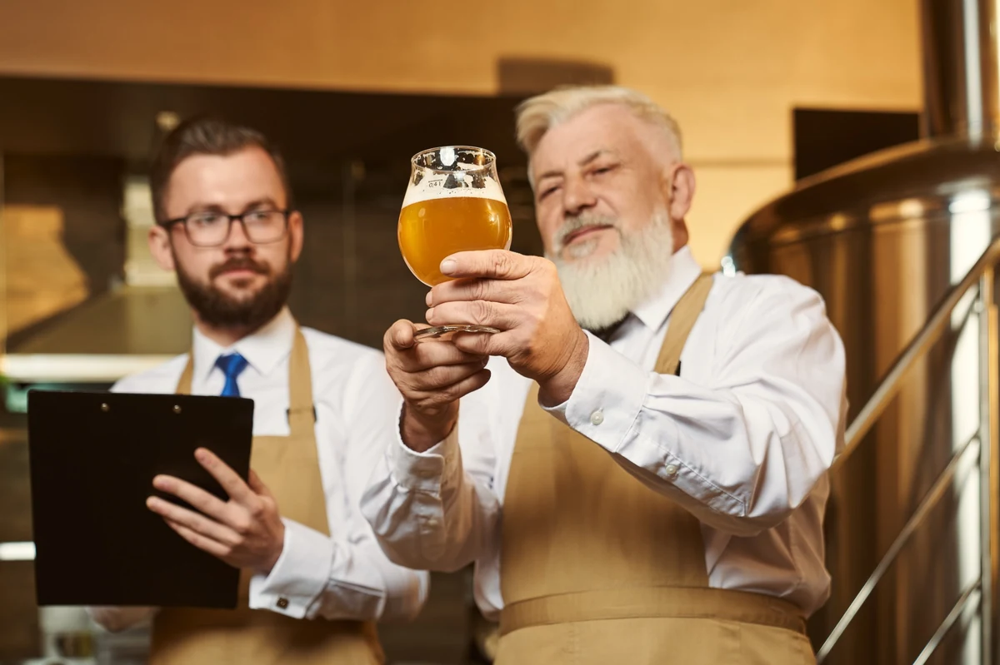
Capacitação e desenvolvimento
Cursos, encontros técnicos e eventos gratuitos e com descontos exclusivos.
Fortalecer. Representar. Desenvolver. Juntos somos mais fortes.
A AGM conecta, representa e impulsiona todo o ecossistema da cerveja artesanal no Rio Grande do Sul.
Defendemos o setor em debates sobre leis, normas e políticas públicas.
Lutamos pela representatividade do setor cervejeiro gaúcho.
Promovemos diálogo e troca de experiências entre cervejarias.
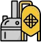
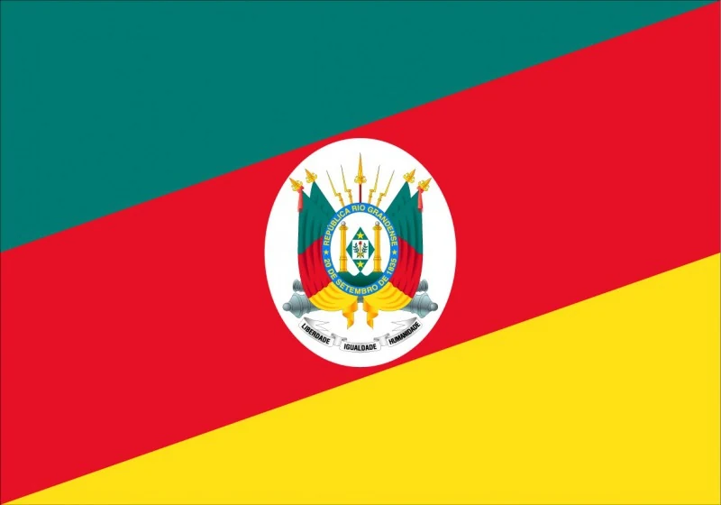
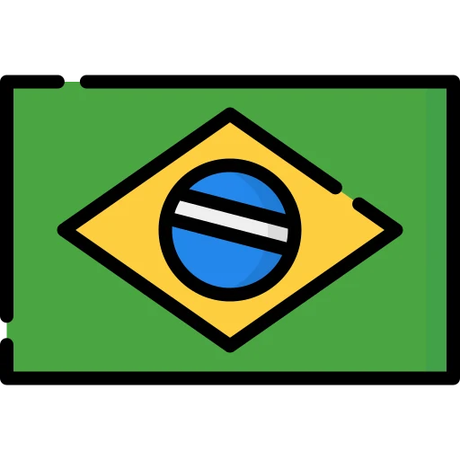
Mercado NacionalMais que associação.
A AGM é uma entidade sem fins lucrativos que reúne e representa todo o ecossistema da cerveja artesanal: cervejarias, marcas ciganas, sommeliers, distribuidores, fornecedores, pontos de venda, profissionais do setor e apaixonados pela cultura cervejeira.
Atuamos em parceria com o poder público, a iniciativa privada e a sociedade civil para fomentar políticas públicas, capacitação, turismo, inovação e geração de negócios.
Reconhecida como entidade de utilidade pública, a AGM se destaca por sua legitimidade junto ao setor e ao poder público.
Conheça mais sobre a AGM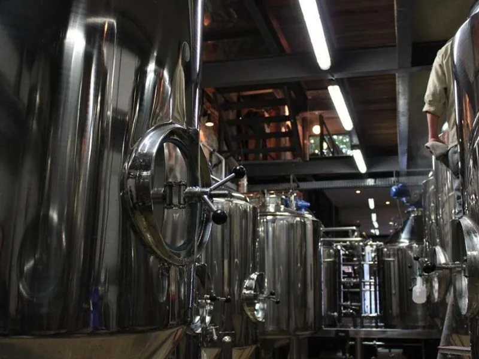
Projeto inédito voltado ao fortalecimento, qualificação e reconhecimento de mercado das cervejarias gaúchas associadas.
Vantagens exclusivas que impulsionam o crescimento da sua cervejaria.

Cursos, encontros técnicos e eventos gratuitos e com descontos exclusivos.
Convênios educacionais com descontos em cursos de graduação, pós e formação.
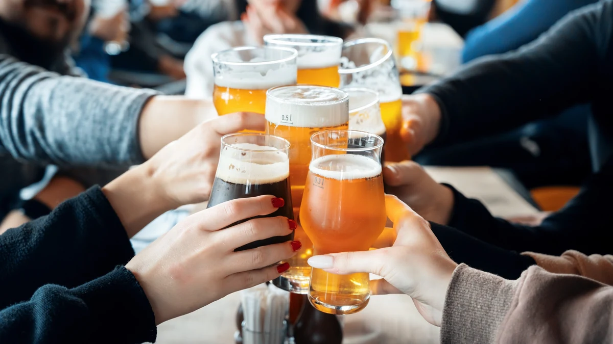
Planos exclusivos com a UNIMED Porto Alegre para você e sua equipe.
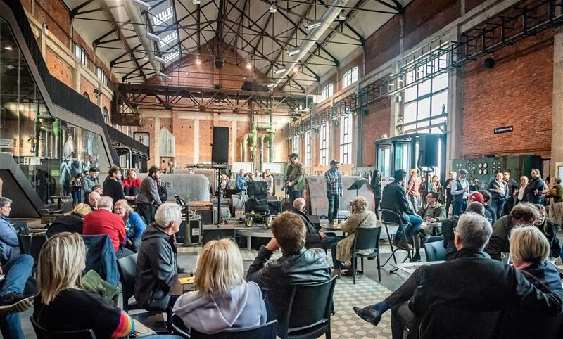
Descontos em hospedagens, coworking e espaços para eventos.
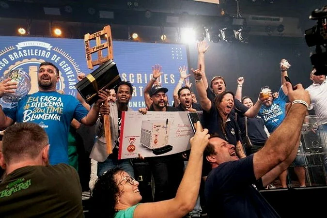
Divulgação da sua marca, concursos, premiações e selo AGM.
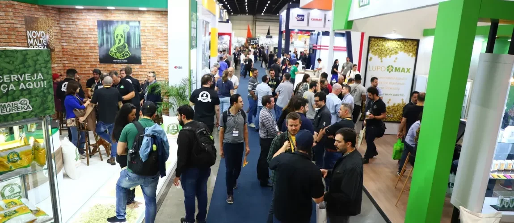
Feiras, festivais, missões empresariais, dados e tendências.
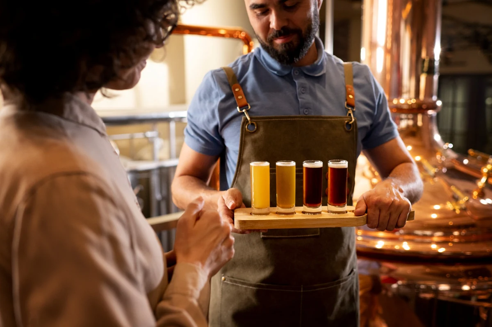
Descontos em gestão, tributação, marketing, produção e qualidade.
Grupo exclusivo de associados para trocas, parcerias e oportunidades.
Atuação ativa em pautas estratégicas em defesa do setor.
Relacionamento com fornecedores, distribuidores e players do setor.
Valores mensais de acordo com o porte da sua cervejaria.
Pagamento à vista da anuidade garante desconto.
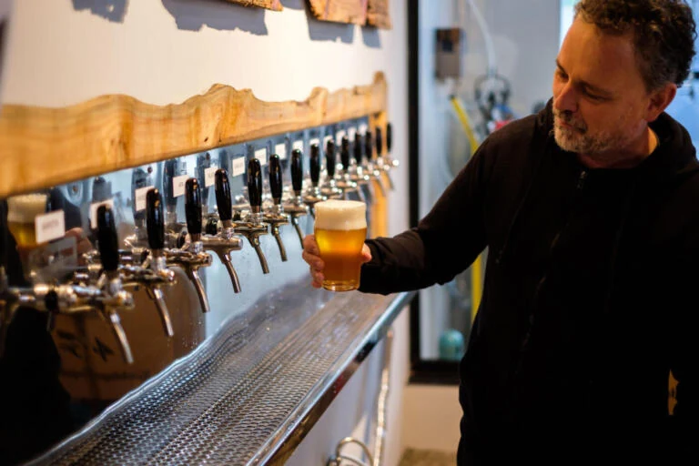
Fornecedores associados que acreditam na força da cerveja artesanal gaúcha e apoiam o desenvolvimento do nosso ecossistema.
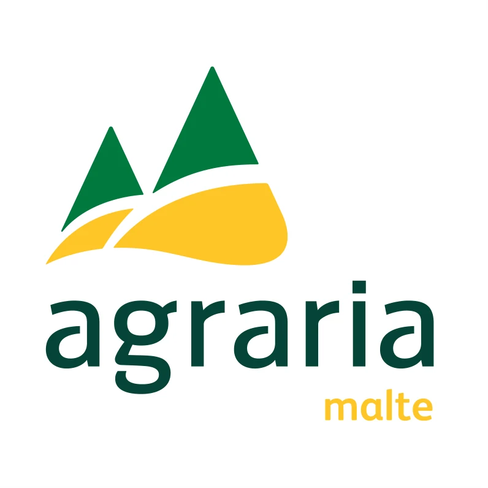
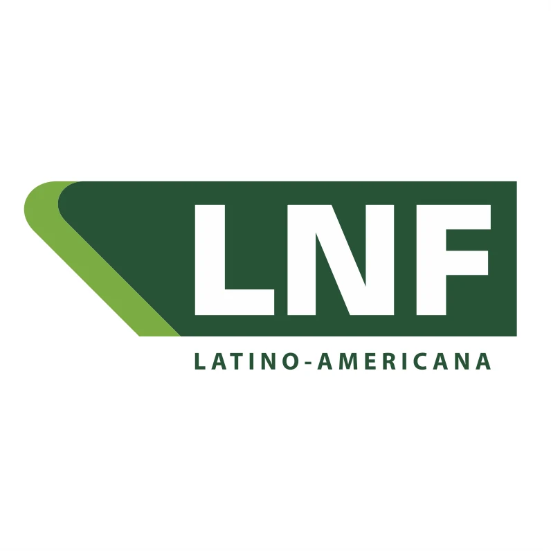
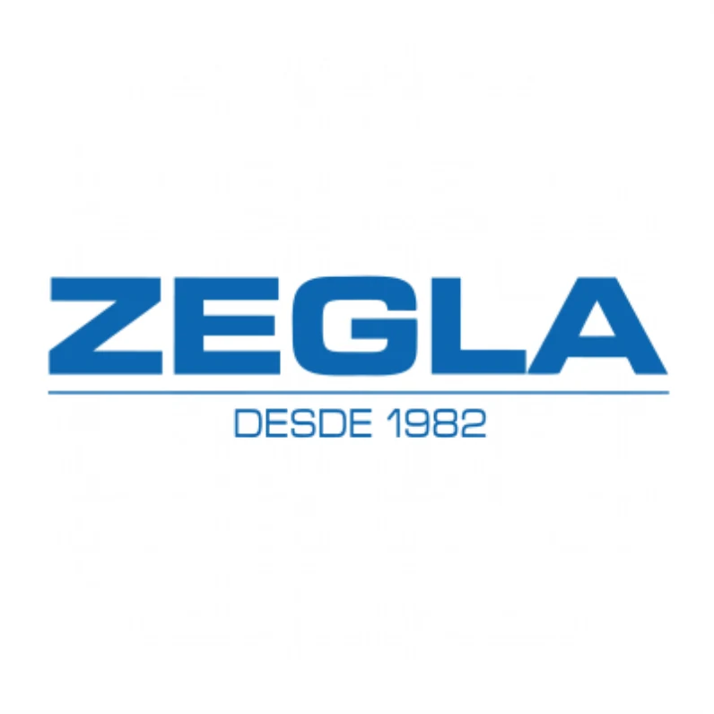
Faça parte da rede que conecta, representa e impulsiona o setor cervejeiro do Rio Grande do Sul.
Quero me associar agora